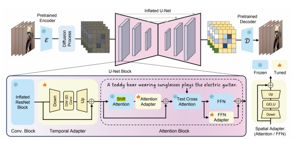

P75
Text-2-Video
P102
Text2Video-Zero
Use Stable Diffusion to generate videos without any finetuning
✅ 完全没有经过训练，使用 T2I Base Model(stable diffusion Model) 生成视频。
Motivation: How to use Stable Diffusion for video generation without finetuning?
- Start from noises of similar pattern
- Make intermediate features of different frames to be similar
Khachatryan et al., “Text2Video-Zero: Text-to-Image Diffusion Models are Zero-Shot Video Generators,” arXiv 2023.
P103
Step 1
- Start from noises of similar pattern: given the first frame’s noise, define a global scene motion, used to translate the first frame’s noise to generate similar initial noise for other frames
P104
Step2
- Make intermediate features of different frames to be similar: always use K and V from the first frame in self-attention
✅ 生成电影级别的视频，而不是几秒钟的视频。
P105
Step3
- Optional background smoothing: regenerate the background, average with the first frame

P106
✅ 文本 → 结构化的中间脚本 → 视频
More Works
| MagicVideo (Zhou et al.) Insert causal attention to Stable Diffusion for better temporal coherence “MagicVideo: Efficient Video Generation With Latent Diffusion Models,” arXiv 2022. | |
|  | Simple Diffusion Adapter (Xing et al.) Insert lightweight adapters to T2I models, shift latents, and finetune adapters on videos “SimDA: Simple Diffusion Adapter for Efficient Video Generation,” arXiv 2023. |
| Dual-Stream Diffusion Net (Liu et al.) Leverage multiple T2I networks for T2V “Dual-Stream Diffusion Net for Text-to-Video Generation,” arXiv 2023. | |
| MagicVideo-V2: Multi-Stage High-Aesthetic Video Generation,2024 |
✅ 用纯文本的形式把图片描述出来。
✅ 方法：准备好 pair data，对 GPT 做 fine-tune.
✅ 用结构化的中间表示生成图片。
✅ 先用 GPT 进行文本补全。
Image-2-Video
| ID | Year | Name | Note | Tags | Link |
|---|---|---|---|---|---|
| 51 | 2023 | Motion-Conditioned Diffusion Model for Controllable Video Synthesis | ✅ 用户提供的稀疏运动轨迹 -> dense光流 ✅ dense光流（condition） + Image -> 视频 | Two-stage, 自回归生成 | link |
| 44 | 2024 | Motion-I2V: Consistent and Controllable Image-to-Video Generation with Explicit Motion Modeling | ✅ 用户提供的控制信号（condition）+ Image -> dense光流 ✅ dense光流（condition） + Image -> 视频 | Two-stage | link |
| 2023 | LFDM (Ni et al.) “Conditional Image-to-Video Generation with Latent Flow Diffusion Models,” | ✅视频->光流 + Mask ✅ 光流+Mask+图像 ->视频 |  | ||
| 2024 | Generative Image Dynamics (Li et al.) “Generative Image Dynamics,” | 图像（无condition） -> SV ✅ SV + 力 -> 光流 ✅ 光流 + Image -> 视频 |  | ||
| 2023 | LaMD: Latent Motion Diffusion for Video Generation | 视频 -> 图像特征 + 运动特征 ✅ 运动特征+图像特征->视频 | |
More Works 闭源
| Latent Shift (An et al.) Shift latent features for better temporal coherence “Latent-Shift: Latent Diffusion with Temporal Shift for Efficient Text-to-Video Generation,” arXiv 2023. | |
| Video Factory (Wang et al.) Modify attention mechanism for better temporal coherence “VideoFactory: Swap Attention in Spatiotemporal Diffusions for Text-to-Video Generation,” arXiv 2023. | |
 | PYoCo (Ge et al.) Generate video frames starting from similar noise patterns “Preserve Your Own Correlation: A Noise Prior for Video Diffusion Models,” ICCV 2023. |
| VideoFusion (Lorem et al.) Decompose noise into shared “base” and individual “residuals” “VideoFusion: ecomposed Diffusion Models for High-Quality Video Generation,” CVPR 2023. |
✅ Framwork (1) 在原模型中加入 temporal layers (2) fix 原模型，训练新的 layers (3) 把 lager 插入到目标 T2 I 模型中。
Sound2Video
The Power of Sound (TPoS)
Sound- and text-guided video generation
- Input/output: a text prompt + an audio segment → a video

Jeong et al., “The Power of Sound (TPoS): Audio Reactive Video Generation with Stable Diffusion,” ICCV 2023.
More Works
| ID | Year | Name | Note | Tags | Link |
|---|---|---|---|---|---|
| 2023 | AADiff: Audio-Aligned Video Synthesis with Text-to-Image Diffusion |  | |||
| 2023 | Generative Disco (Liu et al.) “Generative Disco: Text-to-Video Generation for Music Visualization, |  |
Bain Activity 2 Video
✅ 大脑信号控制生成。
Brain activity-guided video generation
- Task: human vision reconstruction via fMRI signal-guided video generation

Chen et al., “Cinematic Mindscapes: High-quality Video Reconstruction from Brain Activity,” arXiv 2023.
本文出自CaterpillarStudyGroup，转载请注明出处。
https://caterpillarstudygroup.github.io/ImportantArticles/